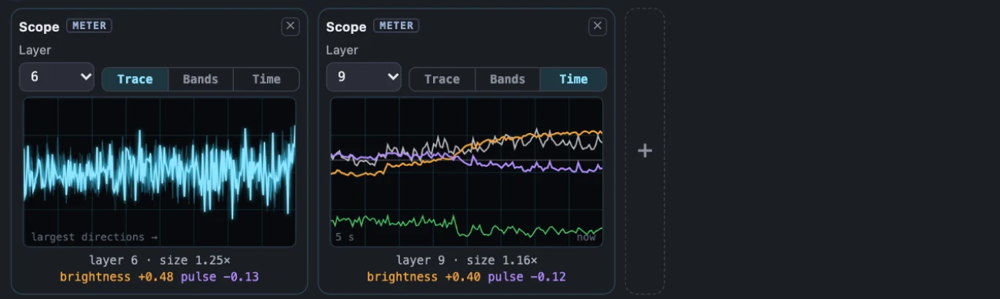

Where the units live
No unit's code is in Abliterator. VAU is a standard and a Python package of its own, vau, kept in its own repository. Abliterator is a host: it installs the package, and gives the units the places in the model they ask for.
- In the VAU package each unit is one Python file with a manifest: its parameters with their ranges and tips, the kind of place it acts on (the stream at a layer, or the output of a block's attention or MLP), and what it needs from its host (the stream's statistics, a direction, the frame's position). The code is PyTorch.
- In Abliterator the host (
units.py) reads each line of the Model layers row, checks it against the manifest, and attaches the unit. It also gives each unit the name it has here, defaults that work on a music model, and the measured ranges and placements. The engine (mrt2_proc.py) wraps each of the model's blocks so that a unit runs where it was placed. - The bridge. Magenta RT 2 runs on Apple's MLX, and the units are PyTorch. At each step, for the one frame being written, the engine copies the stream at the unit's layer out of MLX, passes it through the unit, and copies the result back. Neuron and Quantise skip the bridge: their arithmetic is written again in MLX, tested against VAU's own units, and stays on the GPU, unless a unit uses a window or a random control. A unit with memory (Lookback, Running Average) keeps the streams of past frames itself; moving one of its knobs attaches it afresh and clears that memory.
- The version is pinned:
requirements-mrt2.txtnames the VAU commit the engine installs, and every saved sound's recipe records the chain lines it was made with.
Where they act in the model
Magenta RT 2's temporal transformer writes one 40 ms frame per step. Its residual stream carries 1,024 numbers for the frame through 12 blocks; each block's attention and MLP read the stream and add what they compute back onto it. After the last block, a smaller depth transformer writes the frame's codebook tokens, and the SpectroStream codec turns them into audio.
Units act in two kinds of place. A stream unit sits at a layer, between two blocks: layer=6 is the stream after block 6, and it changes what blocks 7 to 12 read. An output unit sits inside a block, on what its attention or MLP writes (Abliterate) or on the MLP's hidden units, its neurons (Neuron); block=all puts it in every block. The Steer sits at layer 6, before any stream unit there; the scope reads after them.
Placements were measured on the Warm drone and Shimmering pad presets: each unit at its default settings, moved through the layers (or blocks). Green: the sound held at both; red: it broke on at least one; outlined: the unit's default placement here.
The units
Thirteen units run on this engine, grouped here by what they act on. Each has VAU's name for what it does to the stream, which VAU marks with a small v as a vector effect (vLookback, vRunning Average); Frame Repeat is VAU's Position Repeat. Every card plays the unit's sweep on the Warm drone preset (seed 1): the same three seconds with the unit at each measured setting, against the preset with no unit. The bars are the level; red is what the measures counted as broken.
Clips raised 12 dB for listening, like the renders on the front page; the figures under the bars are the renders' own levels. vMorph, VAU's fourteenth unit, fits itself to texts and is not offered on this engine yet.
Seeing what a unit does: the scope
The scope is a meter that sits on the Model layers row beside the units. It reads the stream at its layer once a frame, after the Steer and the units there, and changes nothing. Trace draws the stream as a waveform along its principal directions (measured over the reference prompts on the unchanged model), the largest first; 0 is the ordinary stream and ±1 a typical swing. Bands shows how far it swings in bands of those directions against the ordinary level. Time scrolls the last five seconds: the stream's size against typical, its reading along each Steer direction on the dose's own scale, and how far it turns from one frame to the next.

ZoomSteer: a dose along a direction
Steer is the first card on the Model layers row and is not a VAU unit: it is Abliterator's own, fixed at layer 6. A direction is made from pairs of prompts that differ in one quality, “bright airy ambient pad, high shimmering tones, no drums” against the same piece asked for dark, low and muffled. The engine has the model write a run of frames for each prompt from a fixed seed, averages the stream at every layer over those frames, and takes the difference between the two lists' means. The same difference-of-means method has been used to steer language models and, offline, MusicGen (Facchiano et al. 2025); here it is played live.
Steer adds the direction to the stream after block 6, scaled by the dose and by the stream's own size at that moment: h + ‖h‖ · dose · d. A dose of 0.1 adds a tenth of the stream's size, whatever the music is doing. The doses are read at every step, so a move is heard from the next frame. The two shipped directions, Brightness and Pulse, are kept in backend/config/contrasts/ as editable Markdown, and a new pair list makes a new direction.

On the Warm drone the brightness dose takes the spectral centroid from about 140 Hz at 0 to 1.8 kHz at 0.2 and 2 kHz at 0.4. Below 0 the centroid hardly moves and the level rises instead, by 15 dB at −0.2. Pulse's measured range is narrower, 0 to 0.05. The knobs keep to the ranges where the sound held when they were measured; Full range lets a dose go where it breaks. The plot under the knobs shows the doses heard over the last ten seconds, modulation included, and a scope in Time reads the stream along each direction on the dose's own scale. The ‹ folds the card to a narrow strip, and switched off it folds the same way.